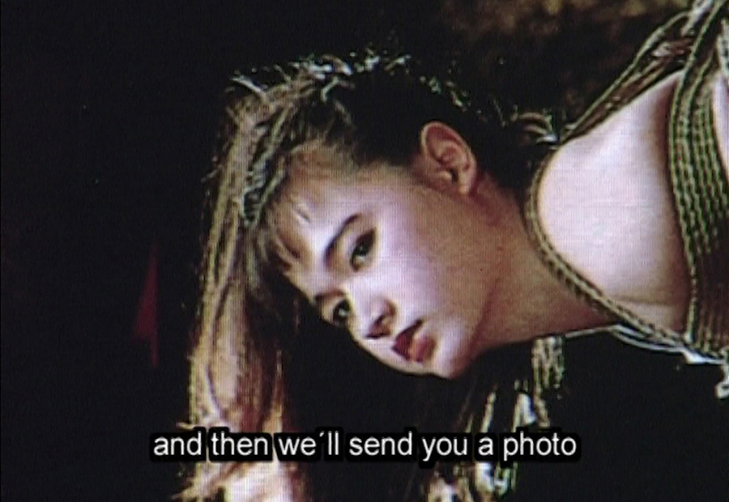
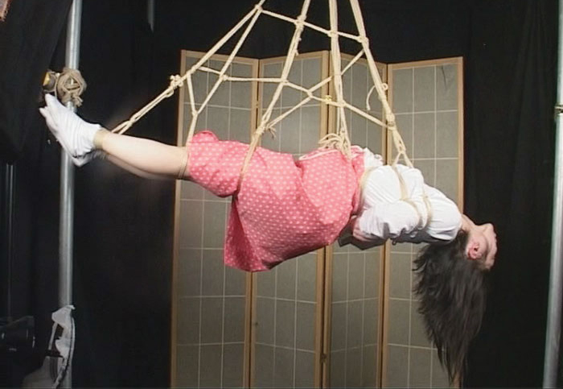
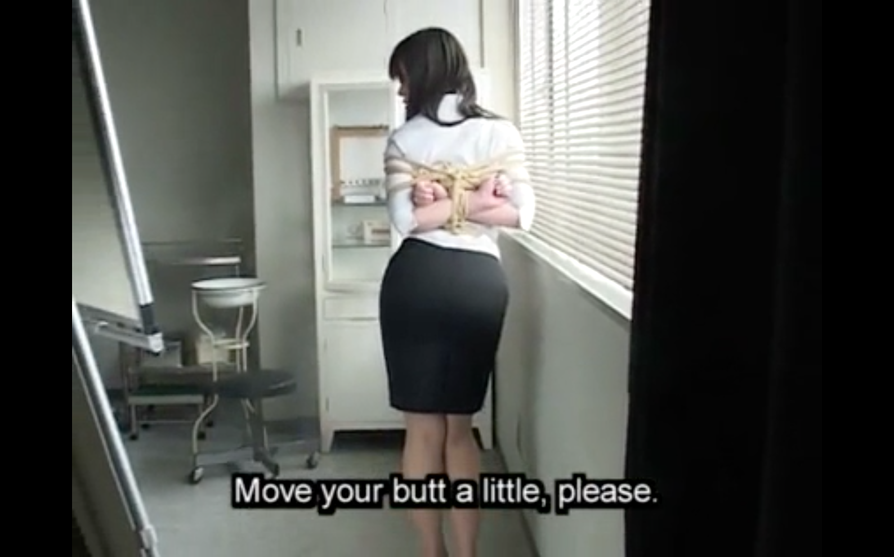
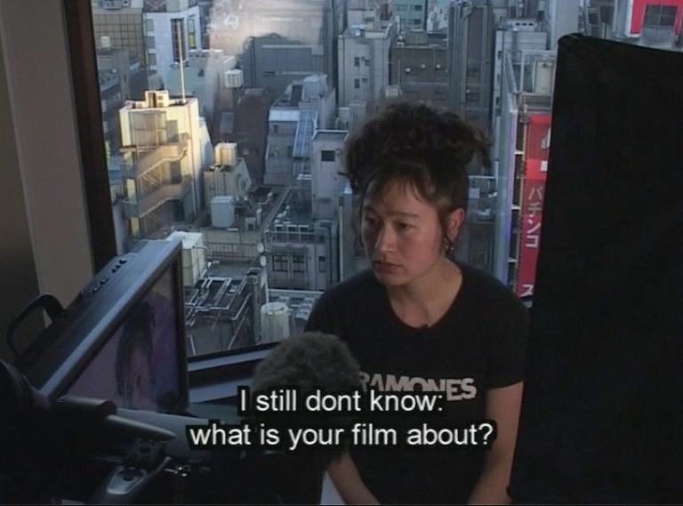
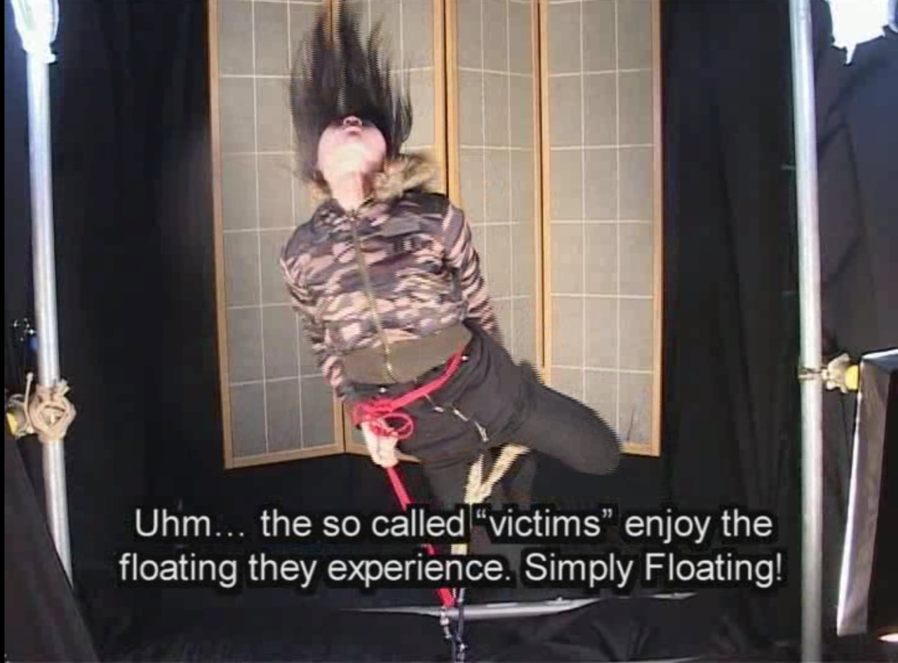
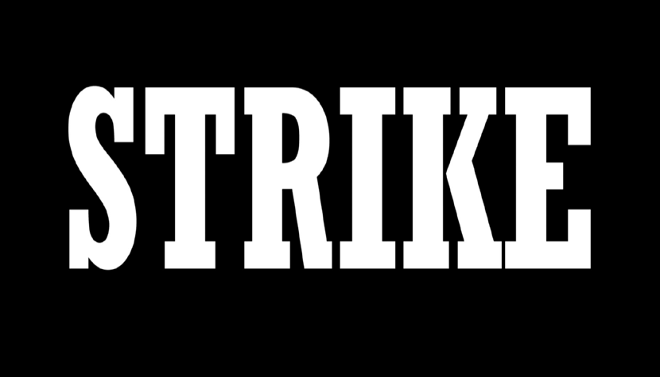
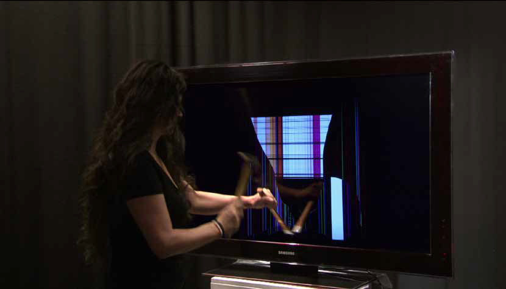

Images are freneticaly morphing
Postcinematic essays after the future (2014) by Sven Lütticken
The much-vaunted ‘end of history’ may be an ideological phantasm, but there is such a thing as the end of the future – or, at least, a crisis of futurity. Hito Steyerl, too, has identified 1977 as the moment when ‘the short decade of the New Left violently comes to an end,’ using David Bowie’s Heroes and the Stranglers’ No More Heroes as pop-cultural indications of this shift. In the film November (2004), this period is ‘the time after October, a time when revolution seems to be over and peripheral struggles have become particular, localist, and almost impossible to communicate. In November a new reactionary form of terror has taken over which abruptly breaks with the tradition of October.’ November – in which Steyerl attempts to retrace the story of her teenage friend Andrea Wolf, who later became a freedom fighter/terrorist for the Kurdish PKK – contains footage that might be termed documentary, but it is not a documentary per se.


Still frames from Lovely Andrea (2008), a single-channel color film by Hito Steyerl, portraying the artist’s life as a film student.
Leaping from the personal to the world-historical and from one type of image to another–from Eisenstein’s October to martial arts movies and the unfinished film Steyerl and Wolf worked on in their youth – November is an essay film par excellence. Leaping from the personal to the world-historical and from one type of image to another–from Eisenstein’s October to martial arts movies and the unfinished film Steyerl and Wolf worked on in their youth – November is an essay film par excellence.
Steyerl writes, films and performs essays, with their various articulations (sometimes under the same title) bolstering and enriching each other. While the essay is at its root a literary genre, in the twentieth century it leapt into new media. The transition from the printed page to film was a haphazard process, and its conceptualisation even more so. In the 1920s, the protagonists of the Soviet montage school conceived of film as a dialectical and historical medium with no rival: filmic montage could unite seemingly disparate shots, such as dialectical thesis and antithesis, and thereby not merely illustrate the march of history but actively participate in it.
The notion of the essay film or film essay was originally proposed by Hans Richter as an alternative for both feature films and conventional documentaries – as a continuation of documentary film by other means. While Richter’s text, published in a Swiss newspaper in 1940, is strenuously apolitical, this abstention from explicit politics is itself highly significant. Richter had collaborated with Sergei Eisenstein in the 1920s, but the rise of Fascism and Stalinism had dashed any hopes of a quick breakthrough into the bright future. Under the circumstances, as October was sliding into November, it made sense to reinvent film, reinvent montage, in essayistic terms – to see if the cinematic medium might not at least find ways for temporality prying open the stolid realism of documentaries.

Still frame from Lovely Andrea (2007), by Hito Steyerl, a film exploring ideas of bondage and domination as they extend to self-identification, popular culture, and politic concerns.
Steyerl’s written essays are not “explanations” of her films. Even when they share a title, as with In Free Fall (a 2010 film and 2011 article), their relation is one of mutual complementation and contradiction–with the article following a more abstract trajectory of speculation. In contrast to the wide-ranging text, the film focuses on the “lives” of Boeing airplanes–leading us from the Israeli army to an airplane junkyard in the Mojave Desert – is rife with the artist’s bold, but deftly executed conceptual jumps. Referencing Sergei Tretyakov’s 1929 “The Biography of the Object,” as well as the stock market crash of that year, the 30-minute short combines shots from the airplane junkyard with Steyerl and the film’s small cast of motley characters, interspersed with found documentary/ propaganda footage explaining how airplanes are reused for aluminium.
In Steyerl’s work, objects liquefy while subjects can solidify into objectified images. The film Lovely Andrea (2007), for example, in which Steyerl retraced her shortlived career as a bondage photo model in Japan cuts from images of tied-up models to footage of Spiderman casting his nets—and the Twin Towers. Yet with her and the other bondage models becoming flesh sculptures, Lovely Andrea also sees the filmmaker become an object—an image.


Still frames from Lovely Andrea (2008), by Hito Steyerl, a sublte exercise in erotic ethnography full of self-deprecating humour, full of juxtapositions: between Spiderman and web-design;tricks with rope and sweatshop garment factories.
In her text “A Thing Like You and Me” (2010), a prime example of Steyerl’s jump-cut essayism, the artist observes that David Bowie with his constantly changing looks and personas is ‘no longer a subject, but an object: a thing, an image, a splendid fetish,’ and ‘a commodity soaked with desire.’ This prompts Steyerl to pose the question: ‘What happens to identification at this point? Who can we identify with? Of course, identification is always with an image. But ask anybody if they’d actually like to be JPEG file. And this is precisely my point: if identification is to go anywhere, it has to be with this material aspect of the image…’ Elsewhere, she has noted that ‘[despite] its apparently immaterial nature, digital wreckage remains firmly anchored within material reality.’ In other words: the storm of history rages on, resulting in entropic debris. But rather than developing a Robert Smithson-like scenario wherein everything veers towards an ultimate state of entropic sameness and frozen stasis, Steyerl sketches a kind of junkspace. A place in which movement abounds, in which images are frenetically circulating, de- and recontextualised, morphed and reformatted.
Subjects as images, images as objects; in her wonderfully messy 2013 film How Not to Be Seen. A Fucking Didactic Educational .Mov File, Steyerl performs various options for going un-detected in the age of total surveillance. These include ‘becoming an image’, chameleon-like, and ‘becoming a pixel’ – since what does not exceed the side of a single pixel cannot be zoomed in on. (‘Happy pixels hop off into low resolution.’) Various scenes show performers wearing a kind of green screen burka – which would allow them to become part of the background – and we see people wearing pixel-boxes over their heads. These are not serious proposals for fooling the NSA or Google, but they are nonetheless reminders that we all are dataobjects and we’d better start acting on that knowledge.
In our allegedly “visual culture”, what really matters are not the images but the subjects that are entangled in the images—even as we are looking, we are being looked at, or being read, or being scanned. Images now function as traps in a way that Lacan never envisaged; they lure us in and mine us for data. In turn, we become both visible and legible, but not necessarily for human eyes—we become scannable.
Steyerl effectively pits one form of speculation against another: a kind of hyper-speculative reasoning legitimised by the essay form against the speculative logic of hyper-capitalism. In fact, as the Uncertain Commons collective has argued, capitalist modernity is marked by a dialectic between what they call firmative and affirmative speculation. The former is speculation in the service of control, of predicting and managing the future –spanning effectively the whole financial system with all its authorities, services and products to organizations such as the WHO and the Intergovernmental Panel on Climate Change.


Still frames from Strike (2010), by Hito Steyerl, a short, humorous film squarely in the tradition of Fluxus performance and wordplay, a double meaning explorationof the word strike to circuit the two terminals of our contemporary split identity as consumer and worker.
Steyerl’s essayism is marked by an engagement with what Heinrich Heine once called the ‘material activity of the brain’ in the age of its digital reformatting. It is a form of early twenty-first century materialism: a materialist praxis that never deals with mere subjects in the sense of “themes”, but rather the subject as maker and consumer—circulator—of images, who is also always producing and circulating as image. Thus the artist herself is an instable subject-object, and her Versuch is a Selbstversuch in the free fall of history. In circulationism, images exist to be performed (repeated and remade) in some manner; and postproducing images means that one constantly performs and re-performs the digital source material. After all, image, sound or text files are nothing without being played—performed—in some manner. So why not do this by talking the audience through whatever images one can scavenge or footage one can shoot cheaply?
Sven Lütticken (2014), “Postcinematic Essays after the Future” in Too Much World: The Films of Hito Steyerl